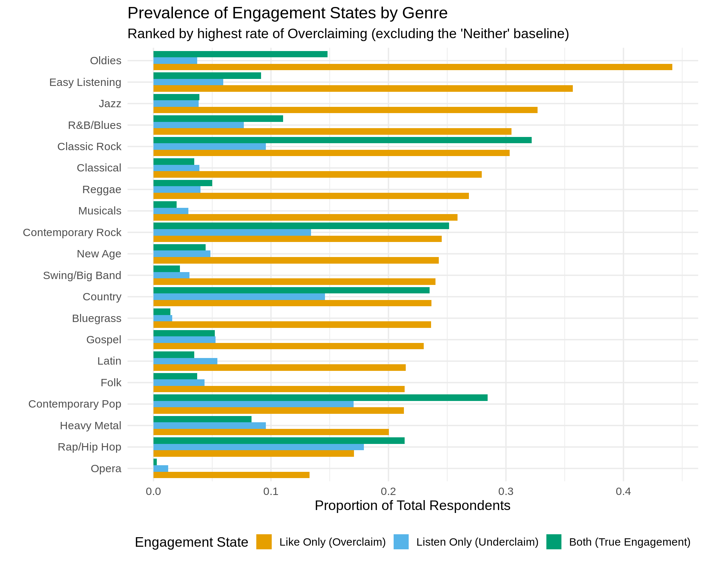
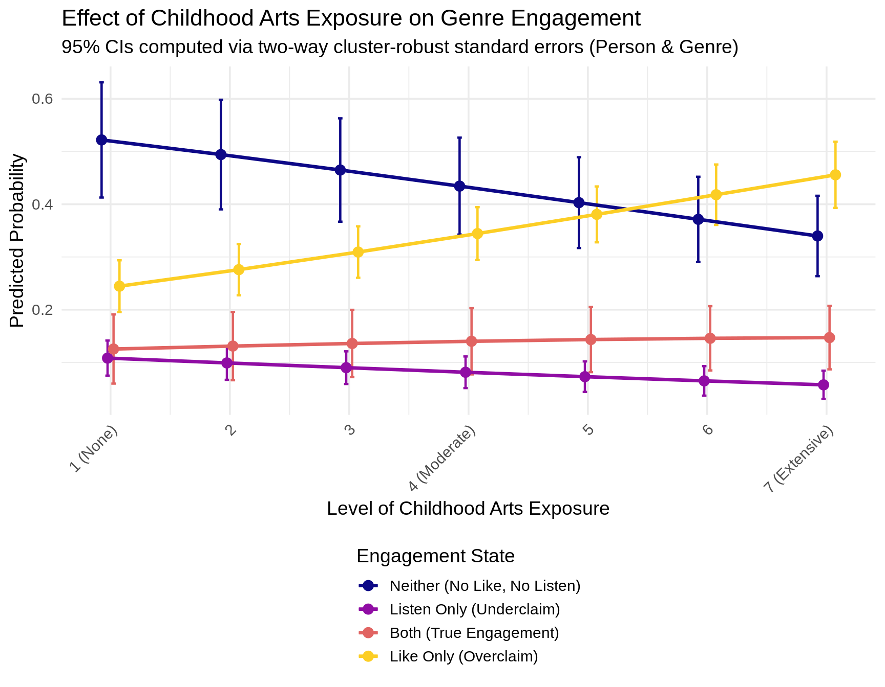

Code
library(haven)
library(dplyr)
library(tidyr)
library(ggplot2)
library(nnet)
library(sandwich)
library(lmtest)
library(marginaleffects)This report was generated using AI under general human direction. At the time of generation, the contents have not been comprehensively reviewed by a human analyst.
The core goal of this analysis is to study “overclaiming” in musical tastes: instances where individuals report that they like a musical genre in the abstract, but that genre is entirely absent when querying the artists and songs actually present on their recent playlists.
To capture this phenomenon, we wrangle survey data to explicitly map abstract genre preferences to concrete listening behavior. We then deploy a multinomial logistic regression framework with two-way clustered standard errors (accounting for both person-level and genre-level variance) to identify which demographic profiles are most prone to overclaiming.
The foundational step requires taking raw, self-reported recent streams/artists and mapping them to 20 consistent numeric genre codes. We then align these 20 genres with the 20 corresponding survey questions regarding abstract genre liking.
library(haven)
library(dplyr)
library(tidyr)
library(ggplot2)
library(nnet)
library(sandwich)
library(lmtest)
library(marginaleffects)We process the core dataset to create two binary indicators for each of the 20 genres: 1. Liking (like): Scored as 1 if the respondent rated their liking of the genre as a 5, 6, or 7 on a 7-point Likert scale. 2. Listening (listen): Scored as 1 if the genre appeared anywhere in their top 10 reported playlist artists.
We then pivot this data into a long format where each row represents a single person-genre pair.
# Load the base dataset
df_raw <- read_dta("dta/analysis_time_CCC.dta")
# Create IDs
df_raw$id <- 1:nrow(df_raw)
# Map the 20 abstract liking questions to the 20 genre codes
genre_mapping <- list(
g1=21, g2=22, g3=24, g4=39, g5=26, g6=36, g7=37, g8=23, g9=31, g10=27,
g11=28, g12=40, g13=29, g14=30, g15=25, g16=32, g17=38, g18=33, g19=34, g20=35
)
# Calculate binary like (5-7) and binary listen indicators
for (g in 1:20) {
like_col <- paste0("like_music_genres_", genre_mapping[[paste0("g", g)]])
df_raw[[paste0("like_g", g)]] <- ifelse(df_raw[[like_col]] >= 5 & df_raw[[like_col]] <= 7, 1, 0)
df_raw[[paste0("listen_g", g)]] <- 0
for (i in 1:10) {
df_raw[[paste0("listen_g", g)]] <- df_raw[[paste0("listen_g", g)]] | (df_raw[[paste0("genre_final", i)]] == g)
}
}
# Pivot data to long format for person-genre analysis
df_long <- df_raw %>%
select(id, educ2, child_arts, agecat, income, female, urban_rural2, race5, social,
starts_with("like_g"), starts_with("listen_g")) %>%
pivot_longer(
cols = matches("^(like|listen)_g\\d+"),
names_to = c(".value", "genre_id"),
names_pattern = "^([a-z]+)_g(\\d+)$"
) %>%
mutate(genre_id = as.factor(genre_id))To study overclaiming comprehensively, we frame the behavior as a multi-state competing outcome. For every genre-person pair, a respondent can fall into one of four mutually exclusive engagement states:
df_long <- df_long %>%
mutate(
engagement_state = case_when(
like == 0 & listen == 0 ~ "Neither",
like == 0 & listen == 1 ~ "ListenOnly",
like == 1 & listen == 0 ~ "LikeOnly",
like == 1 & listen == 1 ~ "Both"
),
engagement_state = factor(engagement_state, levels = c("Neither", "ListenOnly", "LikeOnly", "Both"))
)Before fitting inferential models, we can visualize the magnitude of these different engagement states across the genres. We calculate the absolute proportion of respondents who fall into each state (Listen Only, Like Only, Both, or Neither) for each of the 20 genres.
genre_labels <- data.frame(
genre_id = as.character(1:20),
genre_name = c(
"Swing/Big Band", "Bluegrass", "R&B/Blues", "Classic Rock", "Classical",
"Contemporary Pop", "Contemporary Rock", "Country", "Easy Listening", "Folk",
"Gospel", "Heavy Metal", "Jazz", "Latin", "Musicals",
"New Age", "Oldies", "Opera", "Rap/Hip Hop", "Reggae"
)
)
# Calculate proportions of each engagement state by genre
df_summary <- df_long %>%
group_by(genre_id, engagement_state) %>%
summarize(count = n(), .groups = "drop_last") %>%
mutate(prop = count / sum(count)) %>%
ungroup() %>%
left_join(genre_labels, by = "genre_id")
# Order genres by how frequently they are Overclaimed (LikeOnly)
order_by_overclaim <- df_summary %>%
filter(engagement_state == "LikeOnly") %>%
arrange(prop) %>%
pull(genre_name)
df_summary <- df_summary %>%
mutate(genre_name = factor(genre_name, levels = order_by_overclaim)) %>%
mutate(engagement_state = factor(engagement_state,
levels = c("LikeOnly", "ListenOnly", "Both", "Neither"),
labels = c("Like Only (Overclaim)", "Listen Only (Underclaim)", "Both (True Engagement)", "Neither")))
# Plot side-by-side bar chart (excluding 'Neither' to focus on active states)
df_active <- df_summary %>% filter(engagement_state != "Neither")
p_states <- ggplot(df_active, aes(x = prop, y = genre_name, fill = engagement_state)) +
geom_bar(stat = "identity", position = "dodge") +
scale_fill_manual(values = c("Like Only (Overclaim)" = "#E69F00",
"Listen Only (Underclaim)" = "#56B4E9",
"Both (True Engagement)" = "#009E73")) +
theme_minimal(base_size = 14) +
labs(
title = "Prevalence of Engagement States by Genre",
subtitle = "Ranked by highest rate of Overclaiming (excluding the 'Neither' baseline)",
x = "Proportion of Total Respondents",
y = "",
fill = "Engagement State"
) +
theme(legend.position = "bottom")
# Save to Plots directory
dir.create("Plots", showWarnings = FALSE)
ggsave("Plots/Prevalence_Engagement_States.png", p_states, width = 10, height = 8, dpi = 300)
p_states
The plot above reveals several key findings about genre-level dynamics: - Highly Overclaimed: Easy Listening, Reggae, Classical, and New Age have massive rates of “Like Only” (overclaiming) but almost no “True Engagement” (Both). - Highly Consistent: Contemporary Pop and Contemporary Rock boast the highest rates of “True Engagement” (Both). - Highly Underclaimed: No genre is dominated by underclaiming, but Contemporary Pop has the highest absolute rate of “Listen Only”, meaning many people listen to it without bothering to rate it highly on the survey.
We deploy a fixed-effects multinomial logistic regression (nnet::multinom) to model the probability of falling into these states.
Because our data is in a long format where the same respondent appears 20 times (once for each genre), the observations are not independent. To prevent artificially low \(p\)-values, we calculate Two-Way Clustered Standard Errors. This approach clusters the standard errors simultaneously at the respondent level (id) and the genre level (genre_id), accounting for variance driven by individual respondent tendencies as well as baseline differences in how heavily specific genres are overclaimed.
model_fixed <- multinom(
engagement_state ~ educ2 + child_arts + agecat + female + income + as.factor(race5),
data = df_long
)# Calculate two-way clustered standard errors (Person + Genre)
robust_vcov_twoway <- vcovCL(model_fixed, cluster = df_long[, c("id", "genre_id")])
robust_se_twoway <- sqrt(diag(robust_vcov_twoway))
# Manually compute z-scores and p-values
est <- summary(model_fixed)$coefficients
se_mat_twoway <- matrix(robust_se_twoway, nrow = nrow(est), ncol = ncol(est), byrow = TRUE)
z_vals_twoway <- est / se_mat_twoway
p_vals_twoway <- (1 - pnorm(abs(z_vals_twoway), 0, 1)) * 2
# Helper function to extract cleanly
make_clean_df_twoway <- function(row_idx) {
data.frame(
Predictor = colnames(est),
Estimate = round(est[row_idx, ], 3),
Robust_SE = round(se_mat_twoway[row_idx, ], 3),
Z = round(z_vals_twoway[row_idx, ], 2),
P_Value = round(p_vals_twoway[row_idx, ], 3)
)
}make_clean_df_twoway(2) %>% filter(Predictor %in% c("educ2", "child_arts", "as.factor(race5)2")) Predictor Estimate Robust_SE Z P_Value
educ2 educ2 0.055 0.029 1.86 0.062
child_arts child_arts 0.175 0.025 7.07 0.000
as.factor(race5)2 as.factor(race5)2 0.215 0.198 1.09 0.277make_clean_df_twoway(3) %>% filter(Predictor %in% c("educ2", "child_arts", "as.factor(race5)2")) Predictor Estimate Robust_SE Z P_Value
educ2 educ2 0.053 0.025 2.09 0.037
child_arts child_arts 0.098 0.026 3.81 0.000
as.factor(race5)2 as.factor(race5)2 0.028 0.309 0.09 0.929The application of two-way clustering reveals a crucial finding: Childhood arts exposure (child_arts) is the only demographic variable that remains a highly significant and robust predictor of overclaiming. While it does increase the probability of True Engagement, its effect on Overclaiming is almost twice as strong. Conversely, racial differences that appeared significant under simpler models wash out once clustering accounts for baseline differences across the 20 genres.
To make these multinomial dynamics intuitive, we calculate the marginal predicted probabilities for each of the four states across the spectrum of childhood arts exposure. We apply our two-way cluster-robust variance-covariance matrix to generate the 95% confidence intervals.
# Generate robust predictions using the two-way clustered vcov matrix
pred_marg <- predictions(
model_fixed,
newdata = datagrid(child_arts = 1:7),
vcov = robust_vcov_twoway
)
pred_df_rob <- as.data.frame(pred_marg) %>%
mutate(response.level = case_when(
group == "Neither" ~ "Neither (No Like, No Listen)",
group == "ListenOnly" ~ "Listen Only (Underclaim)",
group == "LikeOnly" ~ "Like Only (Overclaim)",
group == "Both" ~ "Both (True Engagement)"
)) %>%
mutate(response.level = factor(response.level, levels = c(
"Neither (No Like, No Listen)",
"Listen Only (Underclaim)",
"Both (True Engagement)",
"Like Only (Overclaim)"
)))
arts_labels <- c("1 (None)", "2", "3", "4 (Moderate)", "5", "6", "7 (Extensive)")
p_margins <- ggplot(pred_df_rob, aes(x = child_arts, y = estimate, color = response.level)) +
geom_errorbar(aes(ymin = conf.low, ymax = conf.high), width = 0.15, linewidth = 0.8, position = position_dodge(width = 0.2)) +
geom_line(linewidth = 1.2, position = position_dodge(width = 0.2)) +
geom_point(size = 3, position = position_dodge(width = 0.2)) +
scale_color_viridis_d(option = "plasma", end = 0.9) +
scale_x_continuous(breaks = 1:7, labels = arts_labels) +
theme_minimal(base_size = 14) +
labs(
title = "Effect of Childhood Arts Exposure on Genre Engagement",
subtitle = "95% CIs computed via two-way cluster-robust standard errors (Person & Genre)",
x = "Level of Childhood Arts Exposure",
y = "Predicted Probability",
color = "Engagement State"
) +
theme(
legend.position = "bottom",
legend.direction = "vertical",
axis.text.x = element_text(angle = 45, hjust = 1)
)
# Save to Plots directory
dir.create("Plots", showWarnings = FALSE)
ggsave("Plots/ChildArts_Effects_RobustCI_Errorbars.png", p_margins, width = 9, height = 7, dpi = 300)
p_margins
As childhood arts exposure increases, respondents genuinely engage with more music (the red line rises). However, their propensity to overclaim genres (the yellow line) rises sharply, overtaking the baseline state of ignoring the genre completely. Early arts exposure creates broader actual listening habits, but it creates vastly broader claimed listening habits.